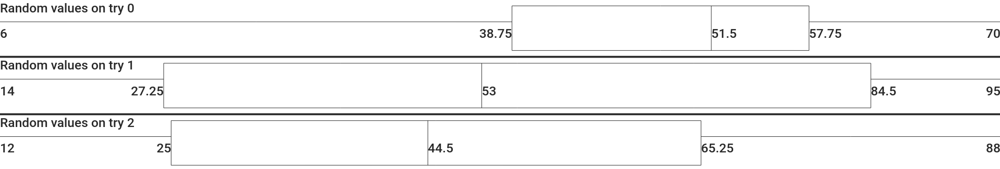

Box and Whisker Plot Help Menu
(home)Error: canvas failing to load:
This error means that your browser does not support the HTML canvas element. This can be due to the fact that your browser is outdated or needs to update. (If you are on internet explorer, please view the generator on a modern browser like firefox)
Error: syntax error on the graph:
This error means that the way you tried to enter the data for the graph was incorrect. Data should be entered in this format: TITLE:DATA_POINT_1,DATA_POINT_2... Each graph should have its own line in the chart. Empty lines will result in syntax errors. Here is an example of a valid chart data entry:
Random values on try 0:41,6,58,47,62,56,70,57,38,17
This will output a chart looking like this:
Random values on try 1:83,91,14,34,15,95,26,31,72,85
Random values on try 2:51,31,88,23,42,85,47,12,70,23

How to resize the graph
On the bottom left of the page, there is a scroll bar. This can be used to adjust the size of the graph.
How to set the font
On the bottom right of the page, there is a dropdown menu. You can select the font from the dropdown there. Unfortunately, the amount of supported fonts for this are limited.
Was your question not answered here?
Raise an issue on the github page!
harrison/katznboyz 2020
{kind=link}